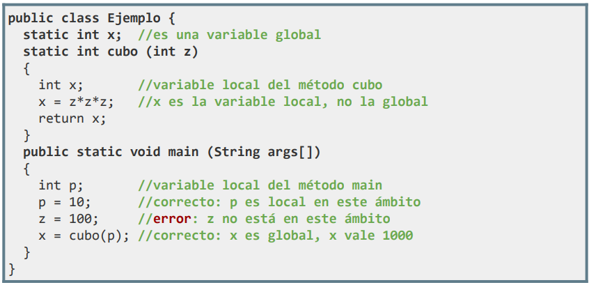
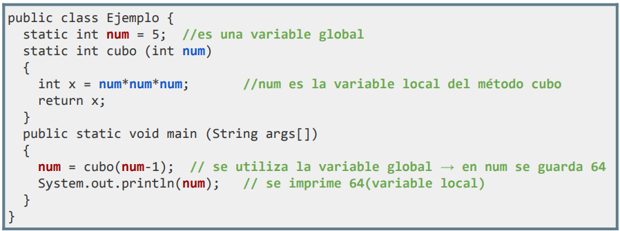

Como ya hemos ido viendo, en el cuerpo de un método se pueden declarar variables que solamente existen dentro de dicho método y el programa principal no conoce. A estas se les denomina variables locales. Por lo tanto:
- Las variables locales sólo se pueden usar en el método en el que se declaran, por lo que su ámbito es dicho método.
- Los parámetros de un método se pueden considerar variables locales del mismo.
Por otro lado, en una clase, se pueden declarar variables globales en cualquier punto fuera del cuerpo de un método (dentro del ‘class’). De momento, para crear estas variables globales utilizaremos la directiva ‘static’. Más adelante, en POO, ya veremos en detalle el significado real del ‘static’ y todas sus implicaciones.
- Los métodos de una clase pueden usar las variables globales de esta.
Ejemplos:


El uso de variables globales no es aconsejable a pesar de que aparentemente nos parezca muy útil, esto se debe a varias razones que atentan contra los principios de la programación modular:
- Legibilidad menor.
- El uso indiscriminado de variables globales produce efectos colaterales. Esto sucede cuando existe una modificación del valor de una variable global dentro de un método por olvidar definir una variable local o un parámetro con ese nombre. La corrección de dichos errores puede ser muy difícil de ver.
- Supone no compartir espacios de memoria con otras funciones y no potenciar el paso de información (llamadas) para que un método trate la información localmente.
Para protegernos frente a los problemas que podrían causar las variables globales y hacer un buen uso de ellas, lo lógico es crearlas como una constante con la finalidad de que no puedan ser modificadas por ningún método.
public class PruebaVariables {
static final double PI = 3.1415926535897932384626433832795;
}